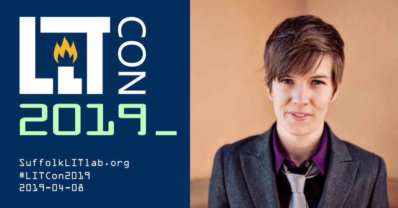

Join Suffolk Law's Clinical Programs and Legal Innovation and Technology (LIT) Concentration for our second annual legal tech conference—LIT Con 2019.

Register Now!!! $25 (Public service waivers available) Registration deadline April 1st.
Monday, April 8, 2019*
9:00 AM - 6:00 PM
Suffolk Law, Sargent Hall
120 Tremont St., Boston, MA 02108
1st Floor Function Room
*April 6-7 there will be a free skills training weekend and a hackathon.
Questions or accommodations?
Please contact Joan Luke at
jluke@suffolk.edu
Note: All attendees are subject to our Code of Conduct.
Hosted by the Suffolk University Law School's
Clinical Programs, LIT Institute, and LIT Lab.
Contact | Terms & Privacy | Code of Conduct